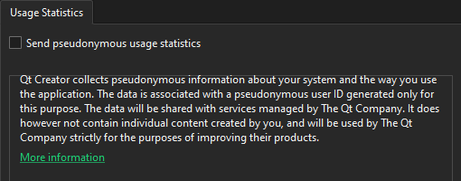

Collect usage statistics
When you install Qt Creator with Qt Online Installer, you can allow it to collect pseudonymous information about your system and Qt Creator use. If you decline, the telemetry plugin is not installed and no usage statistics are collected.
Principles of data collection
No personal data, such as names, IP addresses, MAC addresses, or project and path names are collected. However, QUuid objects are used to identify data records that belong to one user. The objects cannot be converted back to the actual values from which they were generated.
For more information about Qt privacy policy, see Qt Appendix for Privacy and Security.
Qt Creator respects the same privacy rules.
Turn on data collection
To allow the telemetry plugin to collect data, go to Preferences > Telemetry > Usage Statistics, and then select Send pseudonymous usage statistics.

See also Installation.